Chapter 5.3: The Fundamental Theorem of Calculus
The Fundamental Theorem of Calculus
The Fundamental Theorem of Calculus is appropriately named because it establishes a connection between the two branches of calculus: differential calculus and integral calculus. Differential calculus arose from the tangent problem, whereas integral calculus arose from a seemingly unrelated problem, the area problem. Newton’s mentor at Cambridge, Isaac Barrow (1630–1677), discovered that these two problems are actually closely related. In fact, he realized that differentiation and integration are inverse processes. The Fundamental Theorem of Calculus gives the precise inverse relationship between the derivative and the integral. It was Newton and Leibniz who exploited this relationship and used it to develop calculus into a systematic mathematical method. In particular, they saw that the Fundamental Theorem enabled them to compute areas and integrals very easily without having to compute them as limits of sums as we did in Sections 5.1 and 5.2.
The first part of the Fundamental Theorem deals with functions defined by an equation of the form
Definition 1
\[ g(x) = \int_{a}^{x} f(t)dt \]
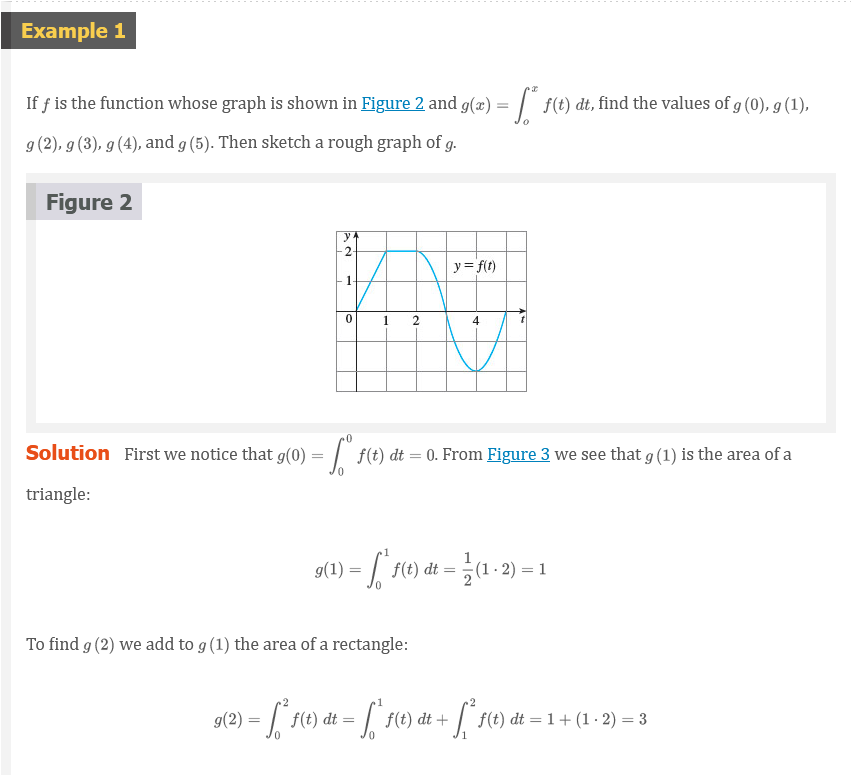 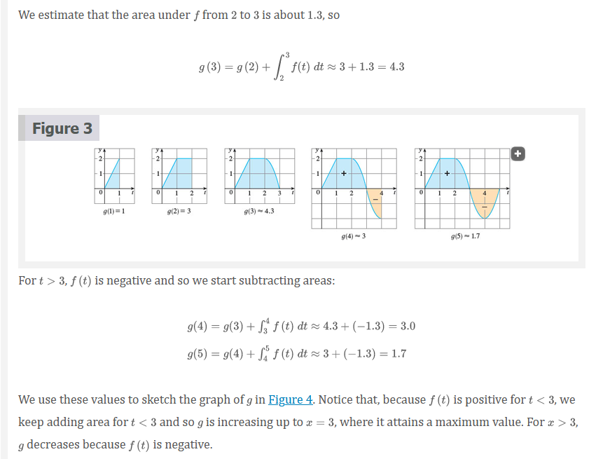 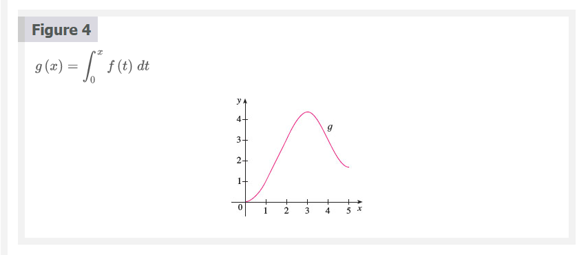
If we take \(f(t) = t\) and \(a = 0\), then, using Exercise 5.2.27, we have
\[ g(x) = \int_{0}^{x} t\;dt = \frac{x^{2}}{2} \]
Notice that \(g^{\prime}(x) = x\), that is, \(g^{\prime} = f\). In other words, if \(g\) is defined as the integral of \(f\) by Equation 1, then \(g\) turns out to be an antiderivative of \(f\), at least in this case. And if we sketch the derivative of the function \(g\) shown in Figure 4 by estimating slopes of tangents, we get a graph like that of \(f\) in Figure 2. So we suspect that \(g^{\prime} = f\) in Example 1 too.
To see why this might be generally true we consider any continuous function \(f\) with \(f(x) \ge 0\). Then \(g(x) = \int_{a}^{x} f(t)dt\) can be interpreted as the area under the graph of \(f\) from \(a\) to \(x\), as in Figure 1.
In order to compute \(g^{\prime}(x)\) from the definition of a derivative we first observe that, for \(h > 0\), \(g(x + h) - g(x)\) is obtained by subtracting areas, so it is the area under the graph of \(f\) from \(x\) to \(x + h\) (the blue area in Figure 5). For small \(h\) you can see from the figure that this area is approximately equal to the area of the rectangle with height \(f(x)\) and width \(h\):
\[ g(x + h) - g(x) \approx hf(x) \]
so
\[ \frac{g(x + h) - g(x)}{h} \approx f(x) \]
Intuitively, we therefore expect that
\[ g^{\prime}(x) = \lim_{h \to 0} \frac{g(x + h) - g(x)}{h} = f(x) \]
The fact that this is true, even when \(f\) is not necessarily positive, is the first part of the Fundamental Theorem of Calculus.
The Fundamental Theorem of Calculus, Part 1
If \(f\) is continuous on \([a, b]\) then the function \(g\) defined by
\[ g(x) = \int_{a}^{x} f(t)dt \;\;\;\;\; a \le x \le b \]
is continuous on \([a, b]\), and differentiable on \((a, b)\), and \(g^{\prime}(x) = f(x)\).
Note
We abbreviate the name of this theorem as FTC1. In words, it says that the derivative of a definite integral with respect to its upper limit is the integrand evaluated at the upper limit
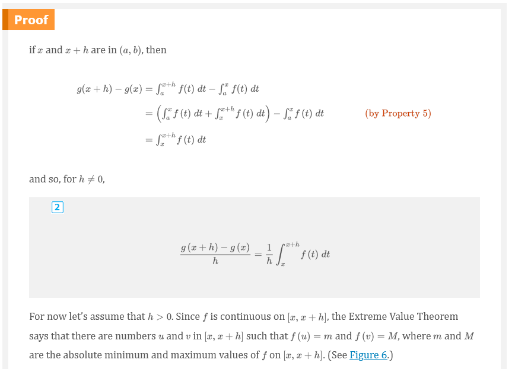 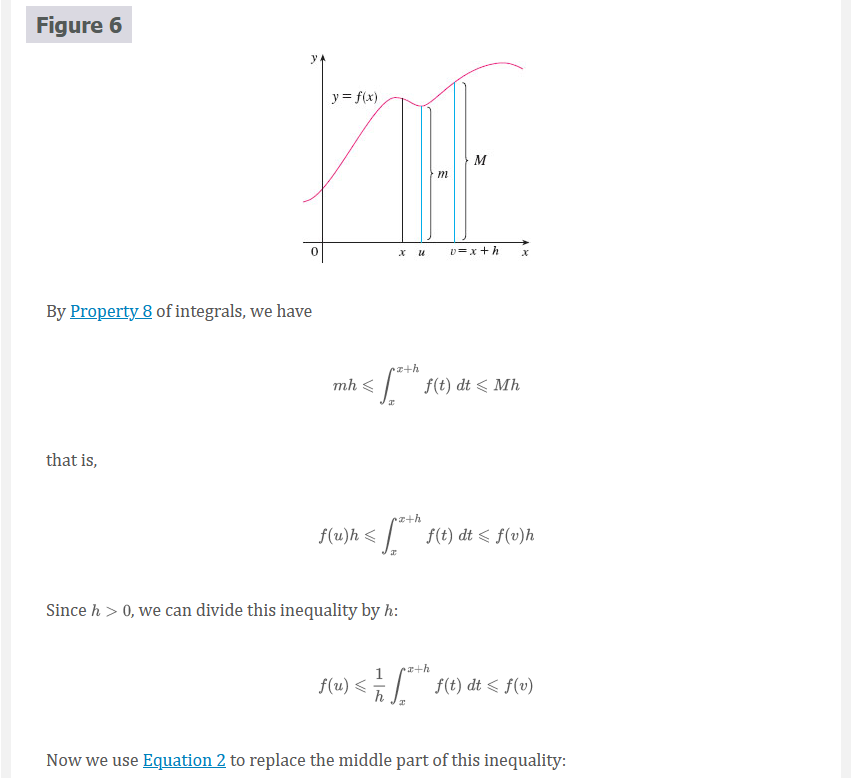 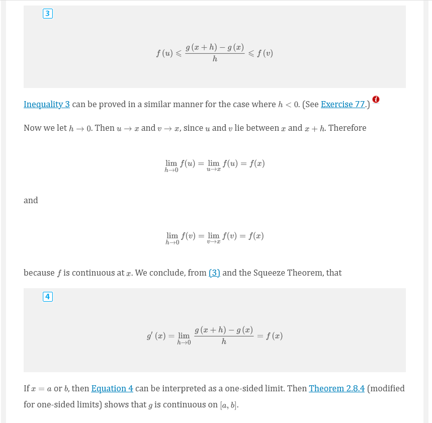
Using Leibniz notation for derivatives, we can write FTC1 as
Definition 5
\[ \frac{d}{dx}\int_{a}^{x} f(t)dt = f(x) \]
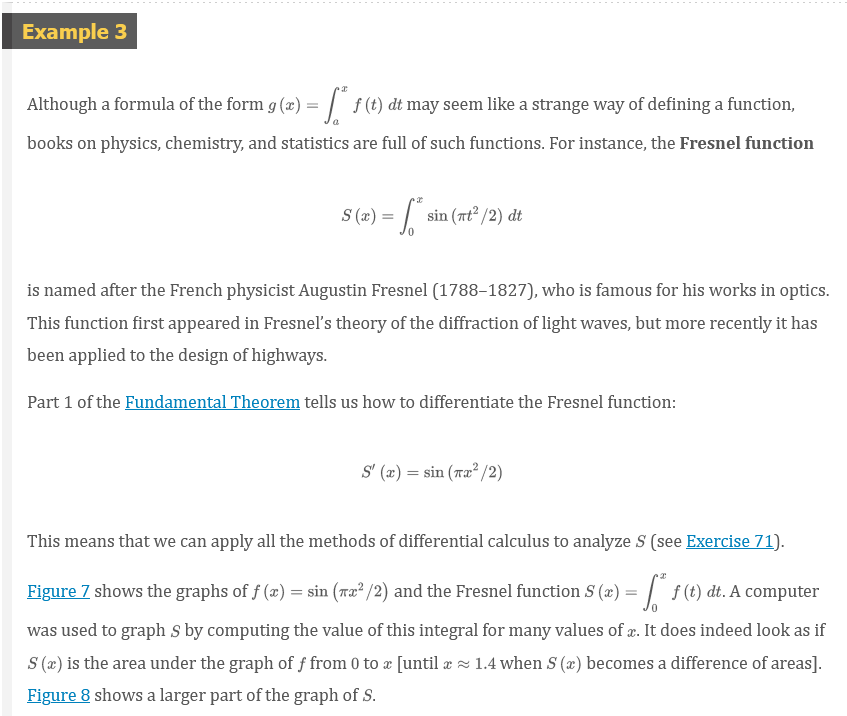 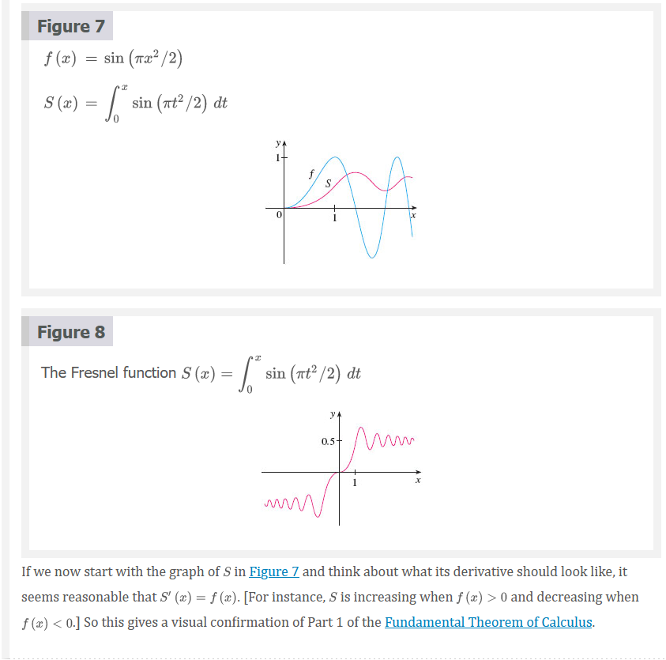
The Fundamental Theorem of Calculus, Part 2
If \(f\) is continuous on \([a, b]\), then
where \(F\) is any antiderivative of \(f\), that is, a function such that \(F^{\prime} = f\).
Note
We abbreviate this theorem as FTC2.
Part 2 of the Fundamental Theorem states that if we know an antiderivative \(F\) of \(f\), then we can evaluate \(\int_{a}^{b} f(x)dx\) simply by subtracting the values of \(F\) at the endpoints of the interval \([a, b]\). It’s very surprising that \(\int_{a}^{b} f(x)dx\), which was defined by a complicated procedure involving all of the values of \(f(x)\) for \(a \le x \le b\), can be found by knowing the values of \(F(x)\) at only two points, \(a\) and \(b\).
Although the theorem may be surprising at first glance, it becomes plausible if we interpret it in physical terms. If \(v(t)\) is the velocity of an object and \(s(t)\) is its position at time \(t\), then \(v(t) = s^{\prime}(t)\), so \(s\) is an antiderivative of \(v\). In Section 5.1 we considered an object that always moves in the positive direction and made the guess that the area under the velocity curve is equal to the distance traveled. In symbols:
\[ \int_{a}^{b} v(t)dt = s(b) - s(a) \]
That is exactly what FTC2 says in this context.

We often use the notation
\[ F(x)]_{a}^{b} = F(b) - F(a) \]
So the equation of FTC2 can be written as
\[ \int_{a}^{b} f(x)dx = F(x)]_{a}^{b} \]
where
\[ F^{\prime} = f \]
Other common notations are \(F(x)|_{a}^{b}\) and \([F(x)]_{a}^{b}\).
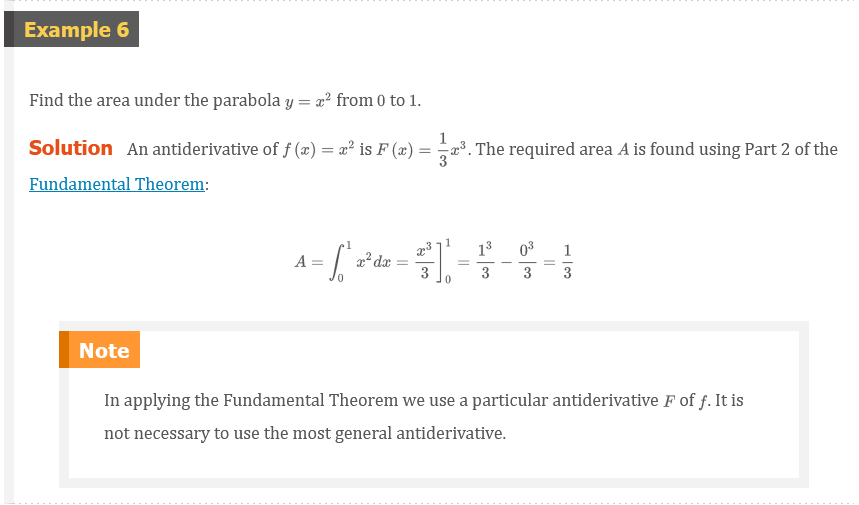 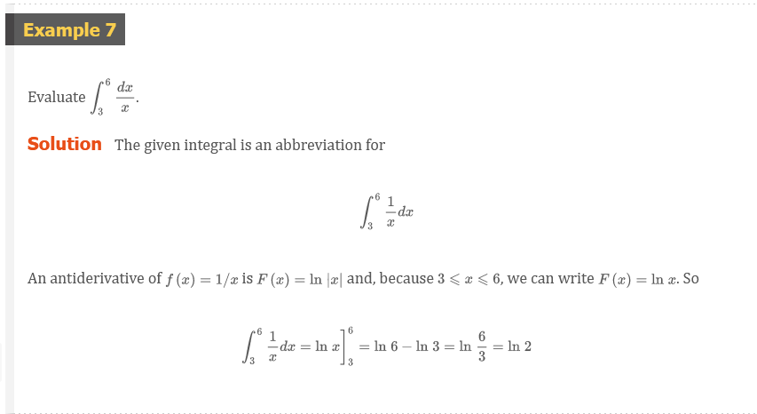 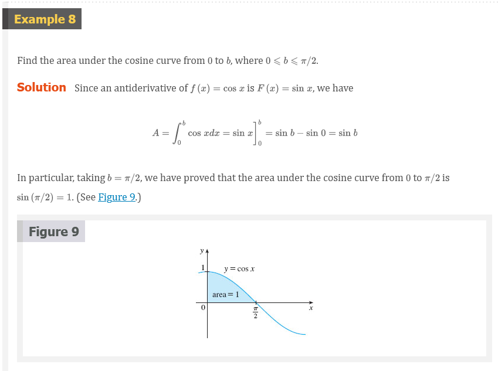 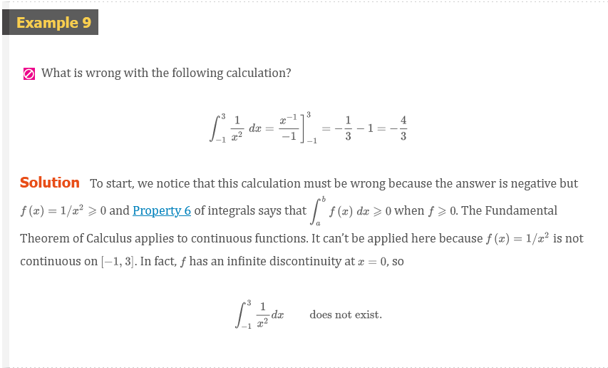
Differentiation and Integration as Inverse Processes
The Fundamental Theorem of Calculus
Suppose \(f\) is continuous on \([a, b]\).
If \(g(x) = \int_{a}^{x} f(t)dt\), then \(g^{\prime}(x) = f(x)\).
\(\int_{a}^{b} f(x)dx = F(b) - F(a)\), where \(F\) is any antiderivative of \(f\), that is, \(F^{\prime} = f\).
We noted that Part 1 can be rewritten as
\[ \frac{d}{dx}\int_{a}^{x} f(t)dt = f(x) \]
which says that if \(f\) is integrated and then the result is differentiated, we arrive back at the original function \(f\). Since \(F^{\prime}(x) = f(x)\), Part 2 can be rewritten as
\[ \int_{a}^{b} F^{\prime}(x)dx = F(b) - F(a) \]
This version says that if we take a function \(F\), first differentiate it, and then integrate the result, we arrive back at the original function \(F\), but in the form \(F(b) - F(a)\). Taken together, the two parts of the Fundamental Theorem of Calculus say that differentiation and integration are inverse processes. Each undoes what the other does.
The Fundamental Theorem of Calculus is unquestionably the most important theorem in calculus and, indeed, it ranks as one of the great accomplishments of the human mind. Before it was discovered, from the time of Eudoxus and Archimedes to the time of Galileo and Fermat, problems of finding areas, volumes, and lengths of curves were so difficult that only a genius could meet the challenge. But now, armed with the systematic method that Newton and Leibniz fashioned out of the Fundamental Theorem, we will see in the chapters to come that these challenging problems are accessible to all of us.
Video Lectures
- 📺 The fundamental theorem of calculus and accumulation functions
- 📺 Functions defined by definite integrals (accumulation functions)
- 📺 Finding derivative with fundamental theorem of calculus
- 📺 Finding derivative with fundamental theorem of calculus: chain rule
- 📺 Negative definite integrals
- 📺 Finding definite integrals using area formulas
- 📺 Definite integral over a single point
- 📺 Integrating scaled version of function
- 📺 Switching bounds of definite integral
- 📺 Integrating sums of functions
- 📺 Worked examples: Finding definite integrals using algebraic properties
- 📺 Definite integrals on adjacent intervals
- 📺 Worked example: Breaking up the integral’s interval
- 📺 Worked example: Merging definite integrals over adjacent intervals
- 📺 Functions defined by integrals: switched interval
- 📺 Finding derivative with fundamental theorem of calculus: x is on lower bound
- 📺 Finding derivative with fundamental theorem of calculus: x is on both bounds
- 📄 Definite integrals properties review
- 📺 The fundamental theorem of calculus and definite integrals
- 📺 Antiderivatives and indefinite integrals
- 📺 Reverse power rule
- 📺 Indefinite integrals: sums & multiples
- 📺 Rewriting before integrating
- 📄 Reverse power rule review
- 📺 Indefinite integral of 1/x
- 📺 Indefinite integrals of \(\sin(x)\), \(\cos(x)\), and \(e^{x}\)
- 📄 Common integrals review
- 📺 Definite integrals: reverse power rule
- 📺 Definite integral of rational function
- 📺 Definite integral of radical function
- 📺 Definite integral of trig function
- 📺 Definite integral involving natural log
Resources
- 📺 The fundamental theorem of calculus and accumulation functions
- 📺 Functions defined by definite integrals (accumulation functions)
- 📺 Finding derivative with fundamental theorem of calculus
- 📺 Finding derivative with fundamental theorem of calculus: chain rule
- 📺 Negative definite integrals
- 📺 Finding definite integrals using area formulas
- 📺 Definite integral over a single point
- 📺 Integrating scaled version of function
- 📺 Switching bounds of definite integral
- 📺 Integrating sums of functions
- 📺 Worked examples: Finding definite integrals using algebraic properties
- 📺 Definite integrals on adjacent intervals
- 📺 Worked example: Breaking up the integral’s interval
- 📺 Worked example: Merging definite integrals over adjacent intervals
- 📺 Functions defined by integrals: switched interval
- 📺 Finding derivative with fundamental theorem of calculus: x is on lower bound
- 📺 Finding derivative with fundamental theorem of calculus: x is on both bounds
- 📄 Definite integrals properties review
- 📺 The fundamental theorem of calculus and definite integrals
- 📺 Antiderivatives and indefinite integrals
- 📺 Reverse power rule
- 📺 Indefinite integrals: sums & multiples
- 📺 Rewriting before integrating
- 📄 Reverse power rule review
- 📺 Indefinite integral of 1/x
- 📺 Indefinite integrals of \(\sin(x)\), \(\cos(x)\), and \(e^{x}\)
- 📄 Common integrals review
- 📺 Definite integrals: reverse power rule
- 📺 Definite integral of rational function
- 📺 Definite integral of radical function
- 📺 Definite integral of trig function
- 📺 Definite integral involving natural log
Textbook